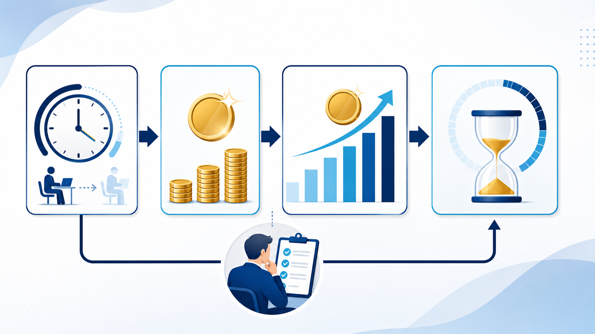

AI INVESTMENT / ROI
AI導入の費用対効果｜削減時間・人件費・回収期間の試算方法
AI導入のROIは、期待する売上だけで決めると不確実になります。まず削減時間と確認工数を測り、導入費用と並べて、複数のケースで回収期間を試算します。

AI導入の費用対効果は4つの数字で考える
費用対効果の試算は、複雑な財務モデルから始めなくて大丈夫です。まず、どれだけ時間を減らせるか、その時間にどの単価を置くか、導入と運用にいくらかかるかを分けます。
削減時間
1件の差分 × 月間件数で出す。
時間単価
担当者の人件費や社内基準を使う。
導入・運用費
契約、教育、確認工数も含める。
月間効果額 = 月間削減時間 × 時間単価 − 月間運用費用、単純回収期間 = 初期費用 ÷ 月間効果額と置くと、会話の出発点になります。
試算には「確認工数」と「使わない案件」も入れる
AI導入の効果を大きく見せる落とし穴は、AIが作った時間だけを削減とすることです。出力を確認し、修正し、例外案件を手作業に戻す時間を差し引きます。利用率が100%にならない場合も、実際の件数で計算してください。
| 項目 | 入力例 | 注意点 |
|---|---|---|
| 月間件数 | 見積・議事録・問い合わせの件数 | 繁忙期と通常月を分ける |
| 現状時間 | 受付から完了まで | 確認・差し戻しを含める |
| 改善後時間 | AI処理と人の確認 | 例外案件は別計算 |
| 単価 | 担当者の時間単価 | 社内基準を明記する |
| 費用 | 初期・月額・教育 | 契約更新条件を確認する |
悲観・標準・楽観の3ケースで判断する
AI導入直後は利用率や削減率が安定しません。標準ケースだけで投資判断をせず、悲観ケースでも許容できるかを見ます。たとえば、利用率が低い、確認時間が長い、例外が多い条件を置き、どこまでなら事業上意味があるかを決めます。
営業や見積の具体的な数字を入れたい場合は工数シミュレーターを使い、サービス導入全体の考え方は費用対効果の案内と合わせて確認してください。
公開後・導入後は実測で試算を更新する
試算は意思決定の前提であり、結果ではありません。導入後は、実際の件数、作業時間、確認時間、差し戻し、利用率を月次で記録し、見積と比べます。数字が悪いときは、AIの性能だけでなく、対象業務や入力の型が合っているかを見直します。
ROIの仮説に含めるもの、含めないもの
試算の最初に、効果へ含める範囲を決めます。月間削減時間だけでなく、AIの出力を確認する時間、ルールを作る時間、教育費、例外案件の手作業を費用側へ入れると、過大な期待を抑えられます。
| 項目 | 効果側に置く | 費用・リスク側に置く |
|---|---|---|
| 作業時間 | 転記・要約・検索の削減 | 確認・修正・再作業 |
| 導入準備 | 再利用できる手順 | 教育・ルール作成 |
| 品質 | 漏れ・対応遅れの減少 | 誤回答・停止時の対応 |
回収期間だけで投資を決めない
回収期間が短くても、情報管理や顧客対応のリスクが高い業務は、別の承認が必要です。反対に、金額効果が小さくても、属人化の解消や引き継ぎの改善が大きければ、継続する価値があります。
悲観・標準・楽観の3ケースを作り、導入後は実績で更新します。AI導入の進め方で試行を設計し、工数シミュレーターで条件を変えて確認してください。
条件を1つずつ変えて感度を見る
ROIの試算では、改善率、利用率、確認時間、月間件数を同時に変えないことが大切です。どの条件が結果を大きく動かすかを確認し、実測すべき数字を絞ります。改善率だけを高く置いた試算は、意思決定の根拠になりません。
| 変える条件 | 悲観ケース | 標準ケース | 確認すること |
|---|---|---|---|
| 利用率 | 一部の担当者のみ | 対象業務の大半 | 使い続けられるか |
| 確認時間 | 修正が多い | チェックリストで安定 | 品質と速度の両立 |
| 件数 | 閑散期 | 通常月 | 繁忙期の耐性 |
金額にしにくい効果を別指標で残す
引き継ぎが早くなる、問い合わせの漏れが減る、担当者が顧客対応へ戻れるといった効果は、単純な人件費だけでは表しにくいものです。金額換算を無理にせず、対応時間、再作業、属人化、利用率などの指標を別に管理します。
導入の判断は、試行の記録とリスクの許容度を合わせて行います。数字が良くても、確認者がいない業務はそのまま拡張しません。
試算表を経営会議で使う
ROIの数字だけを提示すると、前提が変わったときに判断をやり直せません。試算表には、結果と一緒に次の条件を残し、実測値が増えるたびに更新します。
- 対象業務、対象期間、処理件数が明記されているか
- 改善率を一つに固定せず、悲観・標準・楽観の3ケースを置いたか
- 月額費用、初期設定、教育、連携、確認工数を含めたか
- 削減時間を別業務へ振り替える場合の使い道を決めたか
- 実測値への更新日と、次に見直す責任者が決まっているか
よくある質問
人件費を削減しない会社でもROIを計算できますか？
できます。削減時間を顧客対応、品質確認、教育、営業活動へ振り替える価値として整理します。人員削減だけを効果にしない方が、導入後の使い道を決めやすくなります。
AI導入の費用に含めるべきものは？
初期設定、月額料金、連携開発、教育、ルール作成、確認工数、運用担当者の時間を含めます。契約更新や利用量で変わる費用も、条件として残します。